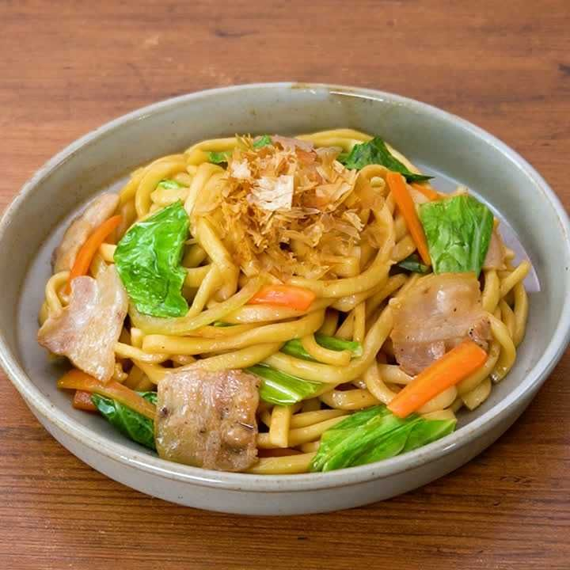
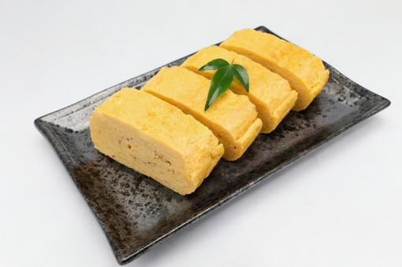

好きなゲーム
ブロスタ
フィンランドのSupercell社が開発・運営する、
スマートフォン向けの基本プレイ無料のアクション・シューティングゲーム
にゃんこ大戦争
ポノス株式会社が配信しているタワーディフェンスゲーム
好きな食べ物
焼うどん
茹でたうどんを肉や野菜などの具材と一緒に炒め、調味料で味付けした日本の料理

卵焼き
溶き卵に調味料を加え、何層にも重ねながら巻き上げて焼いた日本の家庭料理
